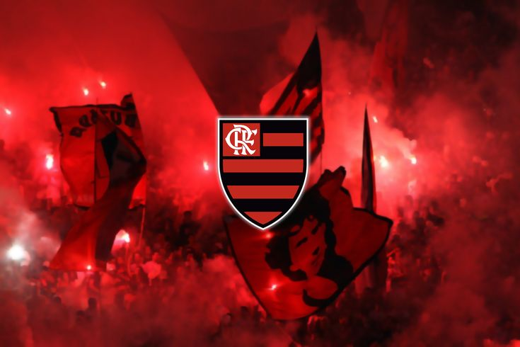
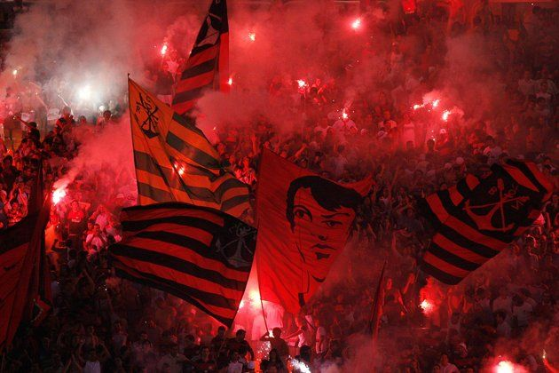
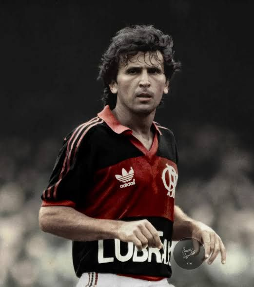
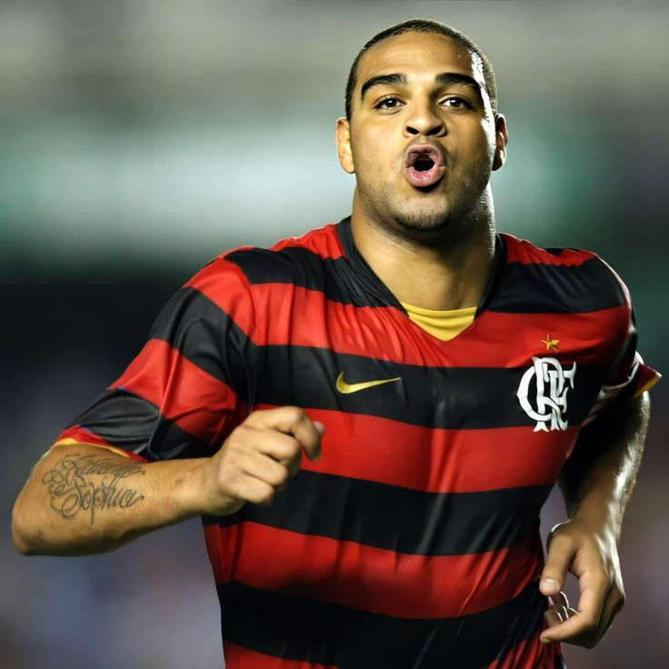

CLUBE DE REGATAS DO
FLAMENGO
UM PAIXÃO QUE ATRAVESSA GERAÇÕES.
O Flamengo não é apenas um clube, é uma história de amor entre milhões de brasileiros.
CONHEÇA O CLUBE
Sobre o Flamengo
O Clube de Regatas do Flamengo é um dos clubes esportivos mais conhecidos e tradicionais do Brasil. Fundado em 1895, no Rio de Janeiro, o clube construiu uma identidade marcada pelas cores vermelho e preto e por uma das maiores torcidas do país. Embora tenha começado ligado ao remo, o Flamengo ganhou enorme destaque no futebol e se tornou uma referência no esporte brasileiro.
Além do futebol, o clube possui tradição em diversas modalidades esportivas. No futebol, sua trajetória é marcada por grandes jogadores, títulos importantes e momentos que ficaram na memória de seus torcedores. A relação entre o clube e sua torcida também é uma de suas principais características, fazendo do Flamengo uma instituição que ultrapassa o campo e representa uma forte paixão esportiva para milhões de pessoas.


.jpg)
UMA HISTÓRIA DE PAIXÃO
Nossa História
O Clube de Regatas do Flamengo foi fundado em 17 de novembro de 1895, no Rio de Janeiro, inicialmente como um clube dedicado ao remo. Anos depois, em 1912, o futebol passou a fazer parte da trajetória do clube, que começou a construir uma grande história dentro dos campos.
Com o passar das décadas, o Flamengo conquistou importantes títulos e revelou grandes jogadores, tornando-se um dos clubes mais conhecidos do futebol brasileiro. Entre seus grandes ídolos está Zico, que marcou uma geração e se tornou um dos maiores nomes da história do clube.
A trajetória do Flamengo também é marcada pela forte relação com sua torcida. Ao longo dos anos, o clube passou a representar uma grande paixão esportiva para milhões de pessoas, construindo uma identidade que vai muito além dos resultados dentro de campo.
GRANDES NOMES
Ídolos do Flamengo

Zico
O Galinho do Quitinho

Adriano Imperador
Imperador

Vinícius Júnior
Cria da Base
De Arrascaeta
Arrasca